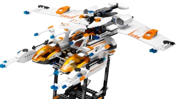

Що має читатися
- Дуже широке тонке крило й довгий центральний корпус.
- Біло-чорна основа з помаранчевими двигунами; зберегти проміжки між модулями.
- Малий шахтарський транспортер лишається пристикованим до хвоста.
Видимих адаптацій немає.
Фракція: Астронавти · Роль: стратегічне сканування та підтримка

Ціль — центральний літак. Пускова вежа й решта деталей на фото — окремі складники набору, вони не входять до юніта.
Видимих адаптацій немає.
Затверджено вигляд LEGO 7644 із рідним транспортером на хвості; пускова вежа й інші моделі набору виключені.
unit.astronauts.mx81_operations_aircraftdesign-package.